# Import Bevölkerungsdaten
pop <- read.csv("data/Bevölkerungsdaten.csv")
# Import Wanderungsdaten
moves <- read.csv("data/Wanderungsdaten.csv")Skript 2 - Daten import, manipulation & plotten
2.1. Daten importieren
Im Kurs “Quantitative Geographien” arbeiten wir mit .csv und .shp files.
Zuerst importieren wir einen Datensatz mit den jährlichen Bevölkerungszahlen im Jahresmittel von 2002-2023. (bereitgestellt auf Lernplattform)
Um einen ersten Überblick über die Datensätze zu erhalten, können wir die Funktionen head() und str() verwenden.
head(pop) jahr gemnr pop
1 2002 10101 11644
2 2003 10101 11699
3 2004 10101 11799
4 2005 10101 12045
5 2006 10101 12171
6 2007 10101 12350str(pop)'data.frame': 50736 obs. of 3 variables:
$ jahr : int 2002 2003 2004 2005 2006 2007 2008 2009 2010 2011 ...
$ gemnr: int 10101 10101 10101 10101 10101 10101 10101 10101 10101 10101 ...
$ pop : int 11644 11699 11799 12045 12171 12350 12549 12717 12816 12950 ...names(pop)[1] "jahr" "gemnr" "pop" head(moves) gemnr jahr bi_zu bi_weg au_zu au_weg
1 10101 2002 870 763 92 127
2 10101 2003 1192 1120 145 101
3 10101 2004 1294 1088 141 122
4 10101 2005 1121 1027 134 81
5 10101 2006 1304 1112 116 123
6 10101 2007 1363 1210 224 163str(moves)'data.frame': 46497 obs. of 6 variables:
$ gemnr : int 10101 10101 10101 10101 10101 10101 10101 10101 10101 10101 ...
$ jahr : int 2002 2003 2004 2005 2006 2007 2008 2009 2010 2011 ...
$ bi_zu : int 870 1192 1294 1121 1304 1363 1354 1297 1235 1338 ...
$ bi_weg: int 763 1120 1088 1027 1112 1210 1173 1227 1160 1234 ...
$ au_zu : int 92 145 141 134 116 224 259 282 288 313 ...
$ au_weg: int 127 101 122 81 123 163 260 226 208 245 ...names(moves)[1] "gemnr" "jahr" "bi_zu" "bi_weg" "au_zu" "au_weg"2.2. The pipe operator %>%
Der Pipe-Operator %>% (Strg + Umschalt + M) übergibt das Ergebnis einer Funktion an die nächste.
pop %>%
filter(gemnr == 10101) %>%
pull(pop) %>%
mean()[1] 13619.38Die Pipe kann man lesen als „UND DANN“. Daten nehmen, UND DANN filtern, UND DANN Bevölkerungszahlen ziehen, UND DANN Mittelwert nehmen.
2.3. Filter & Select
Die Datenbereinigung macht 80 % der Arbeit aus. dplyr bietet fünf wichtige Funktionen. Die ersten beiden reduzieren die Datengröße.
Mit filter() behält man nur Zeilen, die einer Bedingung entsprechen.
# filter()
pop_2002 <- pop %>%
filter(jahr == 2002)| Logical Operators | |
|---|---|
== |
ist gleich (Beachte das doppelte Gleichheitszeichen!) |
!= |
ist ungleich |
& |
UND (Beide/Alle Bedingungen müssen erfüllt sein) |
| |
ODER (Mindestens eine Bedingung muss erfüllt sein) |
%in% |
Wert befindet sich in einer Liste |
Mit select() behält man nur bestimmte Spalten bei. Nützlich, um Datensätze mit vielen Spalten zu bereinigen.
kennz <- pop_2002 %>%
select(gemnr)
head(kennz) gemnr
1 10101
2 10201
3 10301
4 10302
5 10303
6 103042.4. Mutate
Oftmals müssen Sie aus alten Daten neue Daten erstellen. In unserem Fall möchten wir beispielsweise Migrationssalden berechnen. mutate() fügt dem Dataframe eine neue Spalte mit der gewünschten Berechnung hinzu.
Wir berechnen zuerst das Binnenmigrationssaldo (bi_saldo) und dann das Aussenwanderungssaldo (au_saldo) für alle Gemeinden in Österreich.
moves <- moves %>%
mutate(bi_saldo = bi_zu - bi_weg,
au_saldo = au_zu - au_weg)2.5. Joins
Da wir in sowohl in “moves” als auch in “pop” die gleichen Gemeindekennziffern haben, können wir die beiden dataframes vereinigen (oder “joinen”). Zuvor müssen wir allerdings die Jahre 2024 und 2025 aus dem “pop” datensatz entfernen.
pop <- pop %>%
filter(!jahr %in% c(2024, 2025))Wir joinen die beiden Datensätze anhand der Variablen gemnr und jahr.
Der Code verbindet die beiden Tabellen pop und moves anhand der Spalten (by) gemnr und jahr, sodass alle Daten aus pop beibehalten und die passenden Werte aus moves ergänzt werden.
dta <- left_join(pop, moves, by = c("gemnr", "jahr"))Die erste Zahl der Gemeindekennziffern (“gemnr”) gibt das betreffende Bundesland an. Alle Gemeindekennziffern die mit “7” beginnen, sind demnach Tiroler Gemeinden.
dta <- dta %>%
mutate(bld = str_sub(gemnr, 1, 1))
# Wir ersetzen NAs mit 0 (Manche Gemeinden erfahren keine Zu- oder Abwanderung in einzelnen Jahren)
dta[is.na(dta)] <- 0
write.csv(dta, "data/Gemeindedaten.csv", row.names = FALSE)Nun haben wir einen Datensatz mit dem wir weitere Berechnungen anstellen können!
2.6. Group By & Summarize
group_by() teilt die Daten in Gruppen nach einer oder mehreren Variablen, und summarize() berechnet dann zusammenfassende Kennzahlen (wie Summe oder Mittelwert) für jede Gruppe.
Hier berechnen wir Gesamtbevölkerungszahlen und Migrationssalden (Innen- und Aussenwanderungen) für jedes Bundesland, in dem wir die Gemeindezahlen zusammenfassen.
bld_dta <- dta %>%
group_by(bld, jahr) %>%
summarise(pop_tot = sum(pop),
bi_saldo_tot = sum(bi_saldo),
au_saldo_tot = sum(au_saldo)) %>%
ungroup()`summarise()` has grouped output by 'bld'. You can override using the `.groups`
argument.head(bld_dta)# A tibble: 6 × 5
bld jahr pop_tot bi_saldo_tot au_saldo_tot
<chr> <int> <int> <dbl> <dbl>
1 1 2002 276673 120 523
2 1 2003 276542 302 723
3 1 2004 276792 807 1096
4 1 2005 278032 931 886
5 1 2006 279127 1129 753
6 1 2007 280062 1138 625Wir berechnen je eine neue Spalte (mutate) mit den:
Bevölkerungsveränderungsrate
Die Bevölkerungsveränderungsrate ist definiert als \[\frac{Bevölkerungsstand_t - Bevölkerungsstand_{t-1}}{Bevölkerungsstand_{t-1}} \times 100\].
Absolute Veränderung = Differenz zwischen zwei Jahren (
pop_diff) Rate = Differenz relativ zur Ausgangsbevölkerung (pop_rate)Die Bevölkerungsveränderungsrate gibt an, um wie viel Prozent sich die Bevölkerung eines Gebietes innerhalb eines bestimmten Zeitraums verändert hat.
Binnenwanderungsrate
Die Binnenwanderungsrate berechnet sich als \[\frac{\text{Binnenwanderungssaldo}}{\text{Bevölkerungsstand}} \times 1000\].
Die Rate gibt an, wie viele Personen pro 1.000 Einwohner:innen durch Binnenmigration gewonnen oder verloren werden
Aussenwanderungsrate
Die Außenwanderungsrate berechnet sich als \[\frac{\text{Außenwanderungssaldo}}{\text{Bevölkerungsstand}} \times 1000\].
Die Außenwanderungsrate zeigt, wie viele Personen pro 1.000 Einwohner:innen durch Zu- und Wegzüge über die Staatsgrenze hinweg gewonnen oder verloren werden.
Gesamtmigrationsbilanz
Die Gesamtmigrationsbilanz berechnet sich als \[\text{Binnenwanderungssaldo} + \text{Außenwanderungssaldo}\].
Die Gesamtmigrationsbilanz zeigt den gesamten Bevölkerungsgewinn oder -verlust einer Region durch alle Wanderungsbewegungen.
Die Gesamtmigrationsrate berechnet sich analog zu den anderen Migrationsraten als \[\frac{\text{Gesamtmigrationssaldo}}{\text{Bevölkerungsstand}} \times 1000\].
Natürliche Bevölkerungsveränderung
Sieht man sich die demographische Gesamtrechnung an:
\[ \Delta \text{Bevölkerungsveränderung} = \underbrace{\text{natürliche Veränderung}}_{\text{Geburten - Sterbefälle}} + \underbrace{\text{Binnenwanderungssaldo}}_{\text{Zu- minus Fortzüge innerhalb des Landes}} + \underbrace{\text{Außenwanderungssaldo}}_{\text{Zu- minus Fortzüge über die Staatsgrenze}} \]
müssten wir theoretisch die natürliche Bevölkerungsveränderung mit \(\text{Bevölkerungsveränderung} - \text{Gesamtmigrationssaldo}\). berechnen können.
ABER ACHTUNG:
Die auf diese Art berechneten natürlichen Bevölkerungszahlen können von offiziellen Statistiken abweichen, weil unsere Bevölkerungsstände zum Stichtag 1.1. erfasst werden, während Migrationsdaten über das Jahr verteilt für den Referenzzeitraum erhoben werden!
Die Funktion lag() verschiebt die Werte einer Variable um eine Position nach unten, sodass man den vorherigen Wert einer Beobachtung mit dem aktuellen vergleichen kann (z. B. für Zeitreihen, Differenzen oder eben das Berechnen von relativen Veränderungen).
bld_dta <- bld_dta %>%
group_by(bld) %>%
mutate(pop_diff = pop_tot - lag(pop_tot),
pop_rate = (pop_diff / lag(pop_tot)) * 100,
bi_rate = (bi_saldo_tot / pop_tot) * 1000,
au_rate = (au_saldo_tot / pop_tot) * 1000,
mig_saldo = au_saldo_tot + bi_saldo_tot,
mig_rate = (mig_saldo / pop_tot) * 1000,
nat_change = (pop_tot - lag(pop_tot) - lag(mig_saldo))) %>%
ungroup()2.7. The Grammar of Graphics
ggplot2 basiert auf Ebenen. Man erstellt nicht einfach „ein Diagramm“, sondern baut es Schicht für Schicht auf, wie einen Kuchen. Die wesentlichsten Funktionen von ggplot finden sich unter
Help->Cheat Sheets->Data Visualistion with ggplot
Die 3 wesentlichen Schichten:
- Data: Der Datenframe den man plotten möchte.
- Aesthetics (aes): Zuordnung von Variablen zu visuellen Eigenschaften (X-Achse, Y-Achse, Farbe, Größe)
- Geometries (geom): Die zu zeichnende Form (oder “Art”; Bar, Point, Line)
Das Plus Zeichen+ : In ggplot verwenden wir + zum Hinzufügen von Ebenen, nicht die Pipe %>%. So können Sie ganz einfach Titel, Themen und Skalen hinzufügen.
Mit geom_line() erstellen wir einen Line-Chart.
pop_tirol <- bld_dta %>%
filter(bld == 7) %>%
drop_na()
ggplot(data = pop_tirol, aes(x = jahr, y = pop_rate))+
geom_col()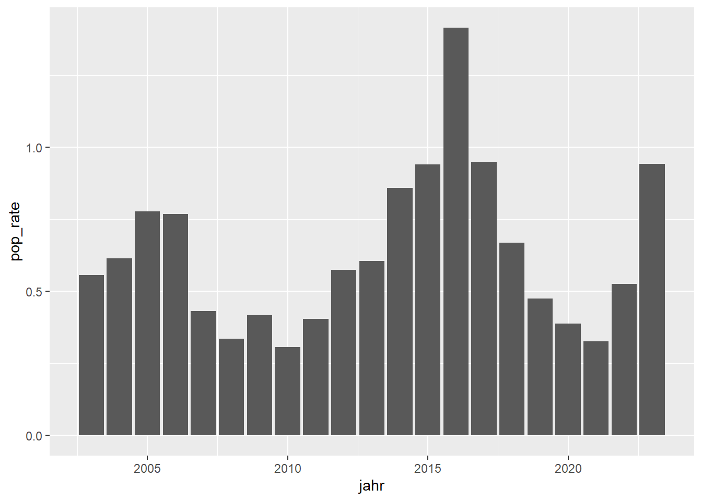
# Wir können mit labs() die Labels der x- und y- Axe anpassen
ggplot(data = pop_tirol, aes(x = jahr, y = pop_rate))+
geom_col()+
labs(x = " ", y = "Bevölkerungsveränderung in %")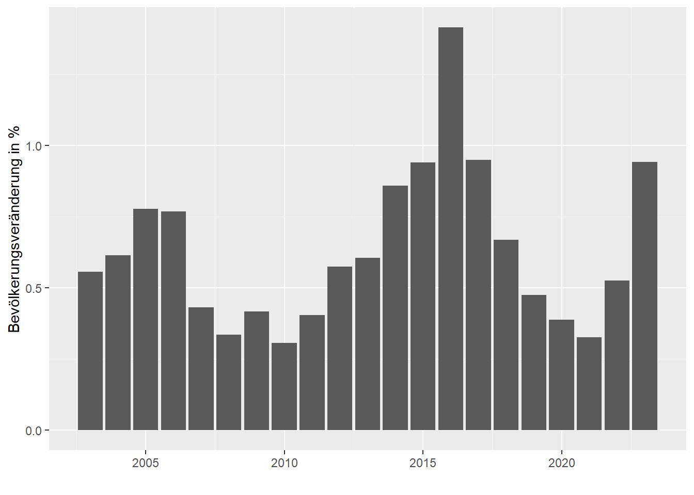
# Wir können ein vorgefertigtes Thema mit beispielsweise theme_classic() auswählen
ggplot(data = pop_tirol, aes(x = jahr, y = pop_rate))+
geom_col()+
theme_classic()+
labs(x = " ", y = "Bevölkerungsveränderung in %")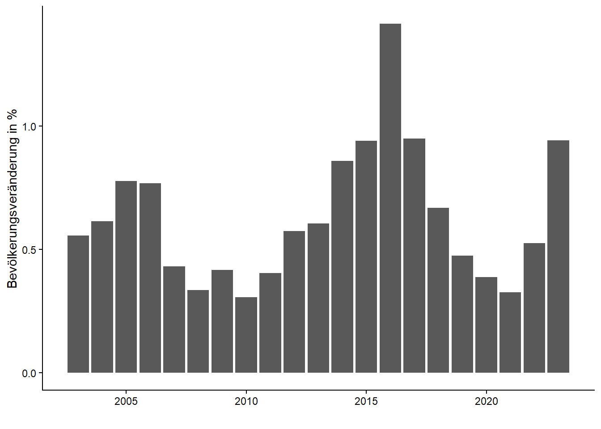
# mit "fill" können wir die Farbe der Balken ändern (auch mit Farbcodes möglich!)
ggplot(data = pop_tirol, aes(x = jahr, y = pop_rate))+
geom_col(fill = "dodgerblue")+
theme_classic()+
labs(x = " ", y = "Bevölkerungsveränderung in %")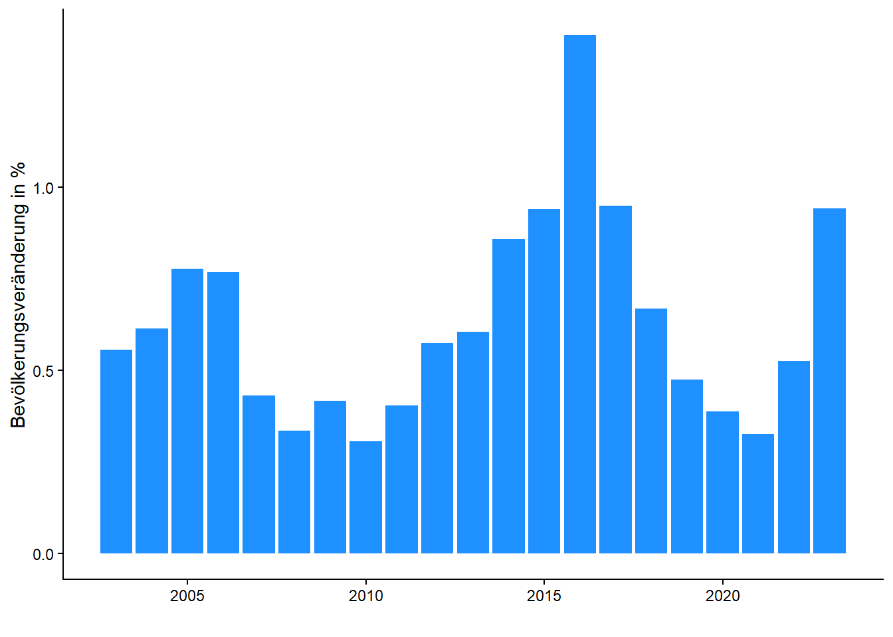
# Mittels zb. as.factor() können wir in ggplot den Datentyp angeben, ohne den ursprünglichen Dataframe zu ändern.
# Mit theme() können wir jedes Element des Diagramms ansteuern und verändern
ggplot(data = pop_tirol, aes(x = as.factor(jahr), y = pop_rate))+
geom_col(fill = "firebrick")+
theme_classic()+
theme(axis.text.x = element_text(angle = 45, hjust = 1))+
labs(x = " ", y = "Bevölkerungsveränderung in %", title = "Bevölkerungsveränderungrate in %; Tirol 2003-2023")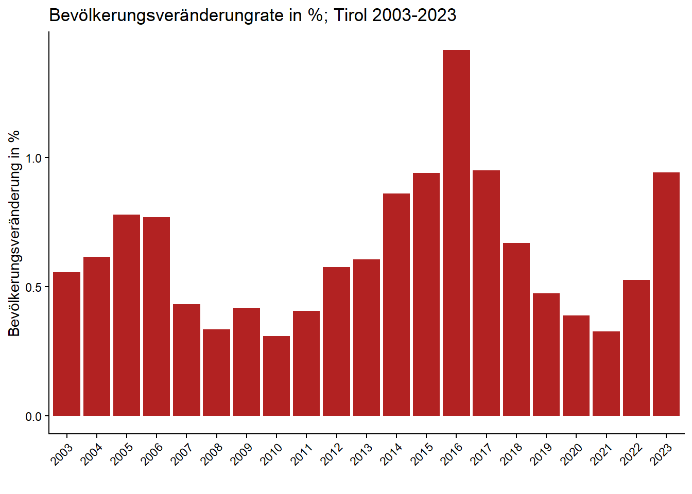
Mit geom_col() erstellen wir einen Bar-Chart. Mit theme_classic() können wir das Thema des Plots ändern.
ggplot(data = pop_tirol, aes(x = jahr, y = au_saldo_tot))+
geom_col()+
theme_classic()+
labs(x = " ", y = "Bevölkerungsveränderung absolut", title = "Bevölkerungsveränderung Tirol, 2002-2023")
ggplot(data = pop_tirol, aes(x = jahr, y = bi_saldo_tot))+
geom_col()+
theme_classic()+
labs(x = " ", y = "Binnenwanderungssaldo", title = "Binnenwanderungssaldo Tirol, 2002-2023")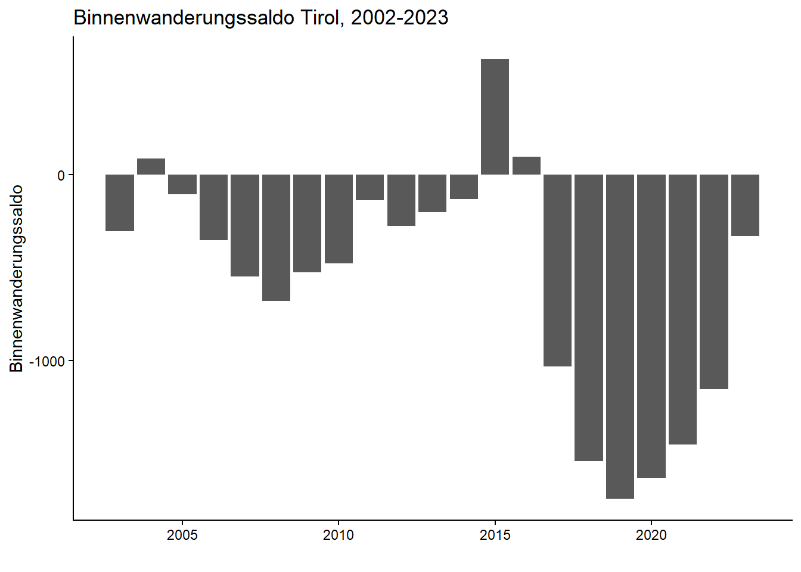
ggplot(data = pop_tirol, aes(x = jahr, y = au_saldo_tot))+
geom_col()+
theme_classic()+
labs(x = " ", y = "Aussenwanderungssaldo", title = "Aussenwanderungssaldo Tirol, 2002-2023")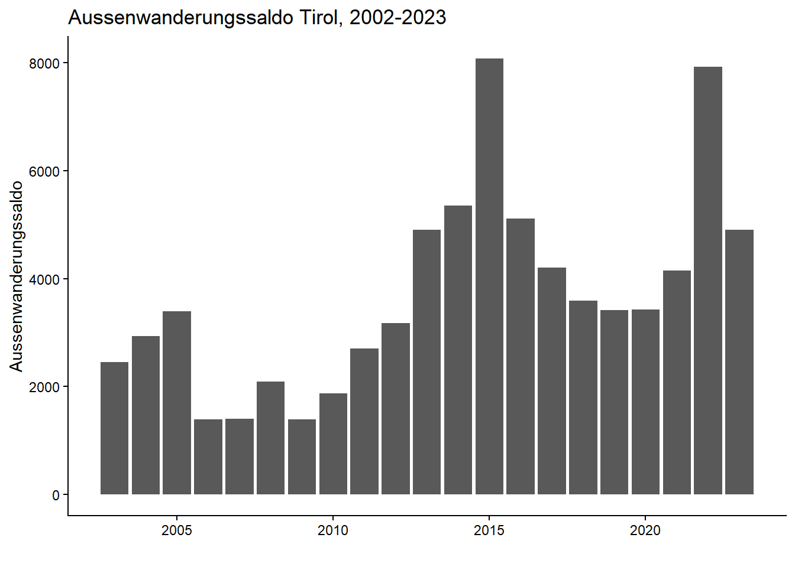
ggplot(data = pop_tirol, aes(x = jahr, y = mig_saldo))+
geom_col()+
theme_classic()+
labs(x = " ", y = "Gesamtmigrationssaldo", title = "Gesamtmigrationssaldo Tirol, 2002-2023")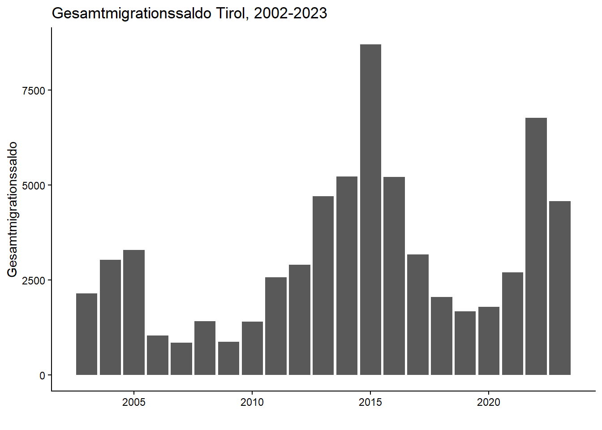
2.8. Tidy-Data
Das Long-Format (oder “Tidy Data”) ist ein Datenformat, bei dem jede Variable eine Spalte, jede Beobachtung eine Zeile und jede Einheit eine Tabelle bildet, sodass Daten klar strukturiert und einfach analysierbar sind.
Im Wide-Format hat jede Variable eigene Spalten, oft mit mehreren Messzeitpunkten pro Spalte, während im Long-Format jede Zeile eine einzelne Beobachtung enthält und Messzeitpunkte oder Kategorien in einer eigenen Spalte stehen.

bld_dta_long <- bld_dta %>%
drop_na()
## Recoding bld_dta$bld into bld_dta$bld_rec
bld_dta$bld <- bld_dta$bld %>%
fct_recode(
"Burgenland" = "1",
"Kärnten" = "2",
"Niederösterreich" = "3",
"Oberösterreich" = "4",
"Salzburg" = "5",
"Steiermark" = "6",
"Tirol" = "7",
"Vorarlberg" = "8",
"Wien" = "9"
)
rates_all <- bld_dta %>%
select(jahr, bld, bi_rate, au_rate, mig_rate)rates_all <- rates_all %>%
pivot_longer(cols = c(bi_rate, au_rate, mig_rate),
names_to = "variable",
values_to = "value") ggplot(data = rates_all %>% filter(bld == "Tirol"), aes(x = as.factor(jahr), y = value, col = variable, group = variable))+
geom_line(linewidth = 1)+
theme_classic()+
scale_color_manual(
values = c("au_rate" = "dodgerblue",
"bi_rate" = "firebrick",
"mig_rate" = "forestgreen"),
labels = c("Aussenwanderungsrate", "Binnenwanderungsrate", "Gesamtwanderungsrate")
)+
geom_hline(yintercept = 0, col = "black", linetype = "dashed")+
labs(y = "Rate pro 1000 EW", x = " ", col = " ", title = "Migrationsstatistik Tirol, 2003-2023", caption = "Quelle: Statistik Austria")+
theme(axis.text.x = element_text(angle = 45, hjust = 1)) 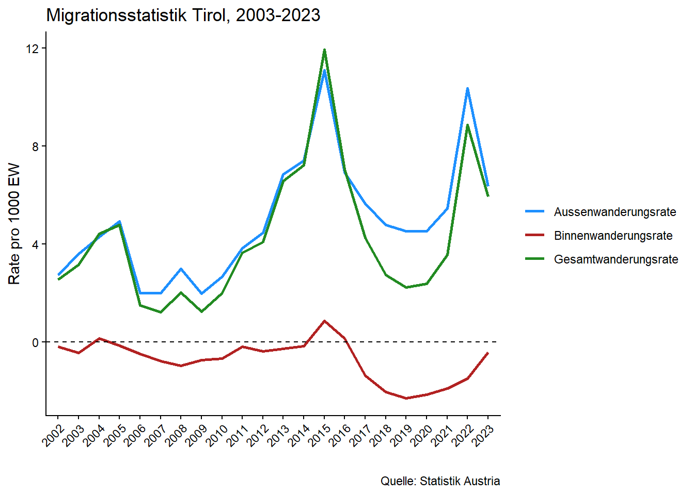
ggplot(data = rates_all %>% filter(bld == "Tirol"), aes(x = as.factor(jahr), y = value, col = variable, group = variable))+
geom_smooth(linewidth = 1, se= F, span = 0.3)+
theme_classic()+
scale_color_manual(
values = c("au_rate" = "dodgerblue",
"bi_rate" = "firebrick",
"mig_rate" = "forestgreen"),
labels = c("Aussenwanderungsrate", "Binnenwanderungsrate", "Gesamtwanderungsrate")
)+
geom_hline(yintercept = 0, col = "black", linetype = "dashed")+
labs(y = "Rate pro 1000 EW", x = " ", col = " ", title = "Migrationsstatistik Tirol, 2003-2023", caption = "Quelle: Statistik Austria")+
theme(axis.text.x = element_text(angle = 45, hjust = 1))`geom_smooth()` using method = 'loess' and formula = 'y ~ x'
ggplot(data = rates_all %>% filter(bld == "Tirol"), aes(x = as.factor(jahr), y = value, fill = variable, group = variable))+
geom_col()+
theme_classic()+
scale_fill_manual(
values = c("au_rate" = "dodgerblue",
"bi_rate" = "firebrick",
"mig_rate" = "forestgreen"),
labels = c("Aussenwanderungsrate", "Binnenwanderungsrate", "Gesamtwanderungsrate")
)+
geom_hline(yintercept = 0, col = "black", linetype = "dashed")+
labs(y = "Rate pro 1000 EW", x = " ", fill = " ", title = "Migrationsstatistik Tirol, 2003-2023", caption = "Quelle: Statistik Austria")+
theme(axis.text.x = element_text(angle = 45, hjust = 1)) # Diese Darstellung ist fehlerhaft, warum?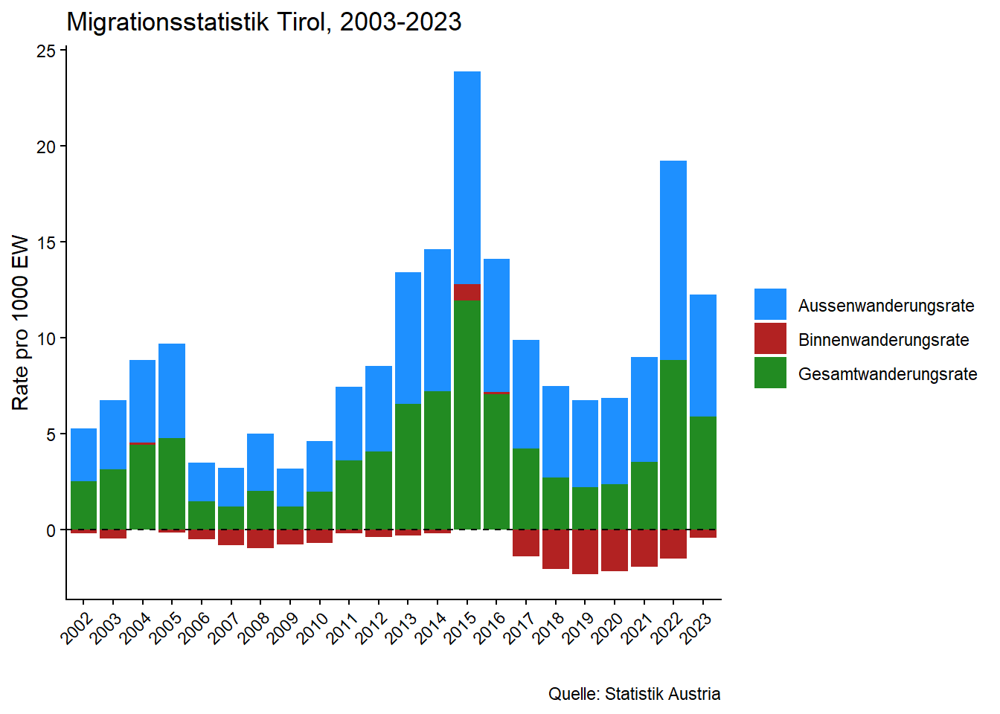
ggplot(data = rates_all %>% filter(bld == "Tirol"), aes(x = as.factor(jahr), y = value, fill = variable, group = variable))+
geom_col(position = "dodge")+
theme_classic()+
scale_fill_manual(
values = c("au_rate" = "dodgerblue",
"bi_rate" = "firebrick",
"mig_rate" = "forestgreen"),
labels = c("Aussenwanderungsrate", "Binnenwanderungsrate", "Gesamtwanderungsrate")
)+
geom_hline(yintercept = 0, col = "black", linetype = "dashed")+
labs(y = "Rate pro 1000 EW", x = " ", fill = " ", title = "Migrationsstatistik Tirol, 2003-2023", caption = "Quelle: Statistik Austria")+
theme(axis.text.x = element_text(angle = 45, hjust = 1))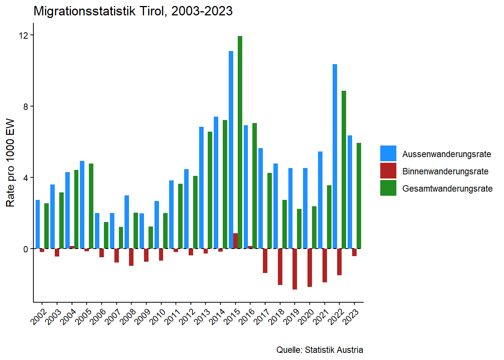
Mit facet_wrap() oder facet_grid() können wir diese Darstellung auch für alle Bundesländer in einem Plot vergleichend darstellen.
ggplot(data = rates_all %>% filter(variable != "mig_rate"),
aes(x = as.factor(jahr), y = value, fill = variable, group = variable))+
geom_col()+
#theme_classic()+
scale_fill_manual(
values = c("au_rate" = "dodgerblue",
"bi_rate" = "firebrick"),
labels = c("Aussenwanderungsrate", "Binnenwanderungsrate")
)+
facet_wrap(bld~.)+
geom_hline(yintercept = 0, col = "black", linetype = "dashed")+
labs(y = "Rate pro 1000 EW", x = " ", fill = " ",
title = "Migrationsstatistik Österreichischer Bundesländer, 2003-2023",
caption = "Quelle: Statistik Austria")+
theme(axis.text.x = element_text(angle = 45, hjust = 1))
2.9. Raumtypologien
Die Urban-Rural-Typologie der Statistik Austria ist eine räumliche Klassifikation, die Gemeinden bzw. Regionen anhand von Kriterien wie Bevölkerungsdichte, strukturellen Merkmalen und Erreichbarkeit in städtische, intermediäre und ländliche Raumtypen einteilt, um statistische Analysen zu ermöglichen.
Die Urban-Rural Typologie der Statistik Austria kann im STATAtlas heruntergeladen werden: https://www.statistik.at/atlas/?mapid=topo_regionale_gliederung_oesterreich
typ <- read.csv2("data/003_gliederungen_nach_städtischen_und_ländlichen_gebieten(1).csv")
head(typ) gemnr Name Wert
1 10101 Eisenstadt 103
2 10201 Rust 410
3 10301 Breitenbrunn am Neusiedler See 310
4 10302 Donnerskirchen 310
5 10303 Großhöflein 103
6 10304 Hornstein 310